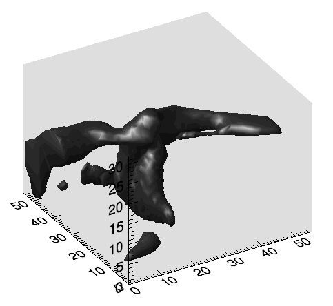
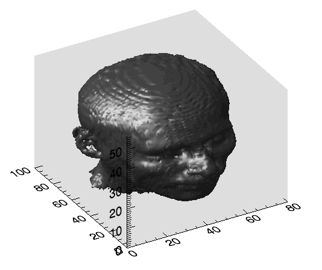
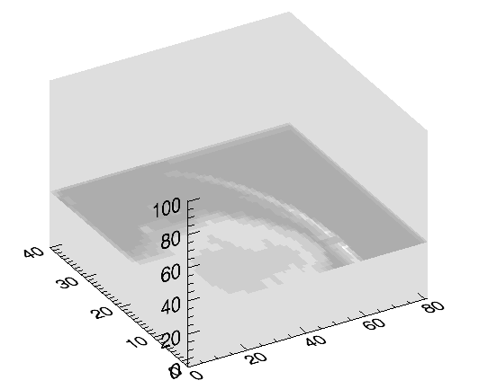
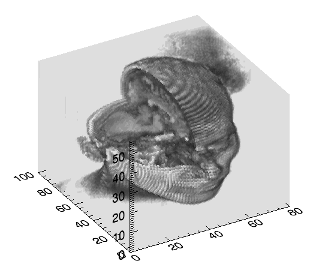
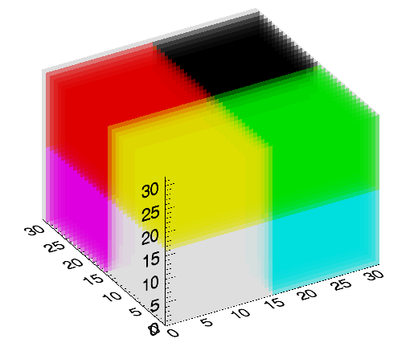

Note: If no arguments are specified, the IVOLUME procedure creates an empty Volume tool.
Note: IDL converts and stores volume data in a BYTE array. Thus, all incoming volume data is converted to BYTE type. This could alter the volume data values if the incoming data cannot accurately be stored as BYTE data.
IVOLUME[, Vol 0 [, Vol 1 ] [, Vol 2 , Vol 3 ]] [, AMBIENT = RGB vector ] [, / AUTO_RENDER ] [, BOUNDS =[ xmin , ymin , zmin , xmax , ymax , zmax ]] [, CLIP_PLANES = array ] [, COMPOSITE_FUNCTION ={0 | 1 | 2 | 3}] [, EXTENTS_TRANSPARENCY = integer ] [, DEPTH_CUE =[ zbright , zdim ]] [, / HIDE ] [, HINTS ={0 | 1 | 2 | 3}] [, INSERT_COLORBAR = value ] [, / IVOLUME ] [, / LIGHTING_MODEL ] [, OPACITY_TABLE0 = byte array ] [, OPACITY_TABLE1 = byte array ] [, RENDER_EXTENTS ={0 | 1 | 2}] [, RENDER_STEP =[ x , y , z ]] [, RENDER_QUALITY ={1 | 2}] [, RGB_TABLE0 = byte array ] [, RGB_TABLE1 = byte array ] [, SUBVOLUME =[ xmin , ymin , zmin , xmax , ymax , zmax ]] [, / TWO_SIDED ] [, VOLUME_DIMENSIONS =[ width , height , depth ]] [, VOLUME_LOCATION =[ x , y , z ]] [, / ZBUFFER ] [, ZERO_OPACITY_SKIP ={0 | 1}]
Note: The volume data provided in the Vol 0 , Vol 1 , Vol 2 , and Vol 3 arguments are scaled into byte values (ranging from 0 to 255) with the BYTSCL function to facilitate using the volume data as indices into the RGB and OPACITY tables. This scaling is done for display purposes only; the iVolume tool maintains the original data as supplied with the arguments for use in other operations. The minimum and maximum values used by the BYTSCL function may be adjusted in the volume’s property sheet. By default, the tool uses the minimum and maximum values of all volume parameters to uniformly byte-scale the data.
A three-dimensional array of any numeric type containing volume data. Arrays of strings, structures, object references, and pointers are not allowed. If more than one volume is specified, they must all have the same dimensions.
The number of volumes present and the value of the COMPOSITE_FUNCTION keyword determine how the volume data is rendered by the iVolume tool. The number of volume arguments determine how the src and srcalpha values for the COMPOSITE_FUNCTION are computed:
src = RGB_TABLE0[VOL0]
srcalpha = OPACITY_TABLE0[VOL0]
src = (RGB_TABLE0[VOL0]*RGB_TABLE1[VOL1])/256
srcalpha = (OPACITY_TABLE0[VOL0]*OPACITY_TABLE1[VOL1])/256
src = (RGB_TABLE[VOL0, 0], RGB_TABLE[VOL1, 1], $
RGB_TABLE[VOL2, 2])/256
srcalpha = (OPACITY_TABLE0[VOL3])/256.
If all the arguments are present, the composite function cannot be set to the average-intensity projection (COMPOSITE_FUNCTION = 3).test for conditional text
Note: Keywords to the IVOLUME routine that correspond to the names of registered properties of the iVolume tool must be specified in full, without abbreviation.
Use this keyword to set the color and intensity of the volume’s base ambient lighting. Color is specified as an RGB vector. The default is [255, 255, 255]. AMBIENT is applicable only when LIGHTING_MODEL is set.
Set this keyword to always render the volume each time the tool window is drawn (the default behavior). Explicitly set this keyword to zero to disable automatic rendering.
Set this keyword to a six-element vector of the form [ x min , y min , z min , x max , y max , z max ], which represents the sub-volume to be rendered. This keyword is the same as the SUBVOLUME keyword.
Set this keyword to an array of dimensions [4, N ] specifying the coefficients of the clipping planes to be applied to this object. The four coefficients for each clipping plane are of the form [A, B, C, D], where A x + B y + C z + D = 0. Portions of this object that fall in the half space A x + B y + C z + D > 0 will be clipped. By default, the value of this keyword is a scalar (-1) indicating that no clipping planes are to be applied.
Note: Clipping planes are equivalent to the obsolete cutting planes. If defined, CUTTING_PLANES will be applied first, then the CLIP_PLANES (until a maximum number of planes is reached).
Note: A window is only able to support a limited number of clipping planes. Some of these clipping planes may already be in use by the tool to support specific data display features. If the total number of clipping planes exceeds the limit, an informational message is displayed.
The composite function determines the value of a pixel on the viewing plane by analyzing the voxels falling along the corresponding ray, according to one of the following compositing functions:
dest' = src * srcalpha + dest * (1 - srcalpha)
is used to compute the final pixel color.
dest' = src + dest * (1 - srcalpha)
is used to compute the final pixel color. This equation assumes that the color tables have been pre-multiplied by the opacity tables. The accumulated values can be no greater than 255.
This option (COMPOSITE_FUNCTION = 3) is not supported for 4-channel volumes.
The COMPOSITE_FUNCTION setting is used only when RENDER_QUALITY is set to 2 (High).
Set this keyword to a two-element floating-point array [ zbright , zdim ] specifying the near and far Z planes between which depth cueing is in effect.
Depth cueing causes an object to appear to fade into the background color of the view object with changes in depth. If the depth of an object is further than zdim (that is, if the object’s location in the Z direction is farther from the origin than the value specified by zdim ), the object will be painted in the background color.
Similarly, if the object is closer than the value of zbright , the object will appear in its “normal” color. Anywhere in-between, the object will be a blend of the background color and the object color. For example, if the DEPTH_CUE property is set to [0, 1], an object at the depth of 0.0 will appear as a 50% blend of the object color and the view color.
The relationship between Z bright and Z dim determines the result of the rendering:
You can disable depth cueing by setting z bright = z dim . The default is [0.0, 0.0].
Set this keyword to an integer that specifies the percent transparency of the volume’s boundary wire frame or walls.
Set this keyword to a boolean value indicating whether the volume should be drawn:
Set this keyword to specify one of the following acceleration hints:
If the newly-created visualization contains a color table (as specified by RGB_TABLE0, RGB_TABLE1, OPACITY_TABLE1, or OPACITY_TABLE2), then set this keyword to insert colorbars for the provided color tables. By default the colorbar will be stacked in the bottom center of the view. To manually position the colorbars, set this keyword equal to a 2-by-n array where each row contains the normalized X , Y position (0 to 1) specifying the location of the bottom left corner of the colorbar, in normalized coordinates.
Set this keyword to use the current lighting model during rendering in conjunction with a local gradient evaluation.
Note: Only DIRECTIONAL light sources are honored by the volume object. Because normals must be computed for all voxels in a lighted view, enabling light sources increases the rendering time.
Set this keyword to a 256-element byte array to specify an opacity table for Vol 0 if Vol 0 or Vol 0 and Vol 1 are present. If all the volume arguments are present, this keyword represents the opacity of the resulting RGBA volume. A value of 0 indicates complete transparency and a value of 255 indicates complete opacity. The default table is a linear ramp.
Set this keyword to a 256-element byte array to specify an opacity table for Vol 1 when Vol 0 and Vol 1 are present. A value of 0 indicates complete transparency and a value of 255 indicates complete opacity. The default table is a linear ramp.
Set this keyword to draw a boundary around the rendered volume. The default (RENDER_EXTENTS = 2) is to draw a translucent boundary box. Possible values for this keyword are:
Set this keyword to a three element vector of the form [ x , y , z ] to specify the stepping factor through the voxel matrix. This keyword is only valid if render quality is set to high (RENDER_QUALITY = 2). The default render step is [1, 1, 1].
Set this keyword to determine the quality of the rendered volume. The default (RENDER_QUALITY = 1) is low quality. Possible values for this keyword are:
Set this keyword to the number of the predefined IDL color table, or to either a 3 by 256 or 256 by 3 byte array of RGB color values to specify a color table for Vol 0 if Vol 0 or Vol 0 and Vol 1 are present. If all the arguments are present, this keyword represents the RGB color values of all of these volumes. The default is a linear ramp
Set this keyword to the number of the predefined IDL color table, or to either a 3 by 256 or 256 by 3 byte array of RGB color values to specify a color table for Vol 1 when Vol 0 and Vol 1 are present. The default is a linear ramp.
Set this keyword to a six-element vector of the form [ x min , y min , z min , x max , y max , z max ], which represents the sub-volume to be rendered. This keyword is the same as the BOUNDS keyword.
Set this keyword to force the lighting model to use a two-sided voxel gradient. The two-sided gradient is different from the one-sided gradient (default) in that the absolute value of the inner product of the light direction and the surface gradient is used instead of clamping to 0.0 for negative values.
A 3-element vector specifying the volume dimensions in terms of user data units. For example, specifying [0.1, 0.1, 0.1] would cause the volume to be rendered into a region that is 0.1 data units long on each side of the volume cube. If this parameter is not specified, the volume is rendered into a region the same size as the number of samples, with an origin of [0, 0, 0]. In this case, a volume with sample size of [20, 25, 20] would render into the region [0:19, 0:24, 0:19] in user data units. Use the VOLUME_LOCATION keyword to specify a different origin.
A 3-element vector specifying the volume location in user data units. Use this keyword to render the volume so that the first sample voxel appears at the specified location, instead of at [0, 0, 0], the default. Specify the location in terms of coordinates after the application of the VOLUME_DIMENSIONS values. For example, if the value of the VOLUME_DIMENSIONS keyword is [0.1, 0.1, 0.1] and you want the volume to be centered at the origin, set the VOLUME_LOCATION keyword to [-0.05, -0.05, -0.05].
Set this keyword to clip the rendering to the current Z-buffer and then update the buffer.
Set this keyword to skip voxels with an opacity of 0. This keyword can increase the output contrast of MIP (MAXIMUM_INTENSITY) projections by allowing the background to show through. If this keyword is set, voxels with an opacity of zero will not modify the Z-buffer. The default (not setting the keyword) continues to render voxels with an opacity of zero.
A floating point value indicating the ratio of the Y dimension to the X dimension in data units. If this property is set to a nonzero value, the aspect ratio will be preserved as the visualization is stretched or shrunk. The default value is 0 for all visualizations except images, meaning that the aspect ratio is not fixed, but is allowed to change as the visualization is stretched or shrunk.
For 3-D graphics, a floating point value indicating the ratio of the Z dimension to the X and Y dimensions, in data units. If this is a nonzero value, the aspect ratio will be preserved as the visualization is stretched or shrunk. The default value is 0, meaning that the aspect ratio is not fixed, but is allowed to change as the visualization is stretched or shrunk.
Set this keyword to one of the following values to specify the axis style.
|
0 |
No axes |
|
1 |
Default Axes: at dataspace minimum values |
|
2 |
Box axes: at dataspace minimum and maximum values |
|
3 |
Crosshair axes: at dataspace median values |
Set this keyword to an RGB value specifying the color to be used as the background color for the view. The default is [255, 255, 255] (white). The BACKGROUND_COLOR keyword can be used when a tool is being created or when a new visualization is being created in an existing tool with the use of the OVERPLOT, VIEW_NUMBER or VIEW_NEXT keywords. The background color is applied to the current view. For example, if multiple views have been created with the VIEW_GRID keyword, and the VIEW_NUMBER keyword is used to create a visualization in the second view, use of the BACKGROUND_COLOR keyword would set the background color in the second view only.
Set this keyword to direct the graphical output of the visualization to a new data space in the current tool. If no tool exists, a new tool is created.
Set this keyword to the zoom factor to be used for the current view. The default value is 1.0, which represents 100%.
Set this keyword to a floating-point value giving the distance in the Z plane at which the objects in the view begin to fade into the background color. The values range from -1 (closest to the viewer) to +1 (farthest from the viewer). The default value is 0. See DEPTHCUE_DIM for examples.
Set this keyword to a floating-point value giving the distance in the Z plane at which the objects in the view have completely faded into the background color. The values range from -1 (closest to the viewer) to +1 (farthest from the viewer). The default value is 0. Some usage examples are:
Depth cue is disabled and no fading will occur.
Objects farther than Zbright will begin to fade into the background, and objects farther than Zdim will be completed faded. This is useful for simulating fog.
Objects closer than Zbright will begin to fade into the background, and objects closer than Zdim will be completely faded. This is useful for simulating lighting at a distance.
Set this keyword if values are specified in device coordinates (pixels) for the POSITION keyword. (Normalized coordinates are the default for these keywords.)
Set this keyword to a two-element vector of the form [ width , height ] to specify the dimensions of the drawing area of the specific tool in device units. The minimum width of the window correlates to the width of the menubar. The minimum window height is 100 pixels.
Set this keyword to disable the iTools splash screen. By default, the first time an iTool is run, the splash screen is displayed.
Set this keyword to automatically scale the newly-created visualization so that it fills the current view. This keyword is ignored if VIEW_ZOOM is present.
Set this keyword equal to an RGB vector specifying the title text color. The default is [0, 0, 0] (black).
This keyword applies only to the text annotation created by the TITLE keyword. It is ignored if TITLE is not specified.
Set this keyword equal to a string specifying the name of the IDL or system font to use for the title text. The default is “Helvetica”.
This keyword applies only to the text annotation created by the TITLE keyword. It is ignored if TITLE is not specified.
Set this keyword equal to an integer specifying the font size for the title text. The default is 16 pt.
This keyword applies only to the text annotation created by the TITLE keyword. It is ignored if TITLE is not specified.
Set this keyword equal to an integer specifying the font style to be used for the title text. Allowed values are:
|
0 |
Normal (the default) |
|
1 |
Bold |
|
2 |
Italic |
|
3 |
Bold Italic |
This keyword applies only to the text annotation created by the TITLE keyword. It is ignored if TITLE is not specified.
Set this keyword to a named IDL variable that will contain the iToolID for the created tool. This value can then be used to reference this tool during overplotting operations or command-line-based tool management operations.
Set this keyword to a three-element vector [ ncol , nrow , index ] to arrange graphics in a grid. The first dimension ncol is the number of columns in the grid, nrow is the number of rows, and index is the grid position at which to place the graphic (starting at element 1). This keyword is ignored if either OVERPLOT or POSITION is specified.
Set this keyword to a two-element vector of the form [ x , y ] to specify the location of the upper left-hand corner of the tool relative to the display screen, in device units.
Note: Some X Window managers explicitly ignore any request from the client for window placement.
Set this keyword to a scalar string or an array of strings that specifies the names of one or more macros to run. The macro names are retrieved and the macros are run sequentially after the iTool and (if applicable) any visualizations have been created. If a macro of the specified name does not exist, IDL generates an error and the routine exits.
Set this keyword to specify the current graphic’s margin values in the layout specified by the LAYOUT keyword. Set MARGIN to a scalar value to use the same margin on all sides, or set MARGIN to a four-element vector [ left , bottom , right , top ] to specify different margins on each side.
Margin values are expressed in normalized units ranging from 0.0 to 0.5.
This keyword is ignored if either OVERPLOT or POSITION is specified. If the DEVICE keyword is used, the values are given in device units (pixels).
Set this keyword to a string to specify the name for this visualization.
Set this keyword to cause the iTool not to prompt the user to save changes when closing the tool. The default is to prompt the user to save changes.
Set this optional keyword if input arguments are specified in normalized [0, 1] coordinates for the POSITION keyword. (Normalized coordinates are the default for these keywords.)
Set this keyword to an iToolID to direct the graphical output of the visualization to the tool specified by the provided iToolID.
Set this keyword to 1 (one) to place the graphical output of the visualization in the current tool. If no current tool exists, a new tool is created.
This iToolID can be obtained during the creation of a previous tool or from the iGetCurrent routine.
POSITION is a four-element vector that determines the location of the visualization within the iTool window. The coordinates x 0 , y 0 , represent the lower left and x 1 , y 1 , represent the upper right corners of the data space. Coordinates are expressed in normalized units ranging from 0.0 to 1.0. If the DEVICE keyword is present, the units are given in device units (pixels).
Note: When using POSITION, factor in enough space to display the title and axis labels. For example, if you use POSITION to place your visualization at 0 on the X or Y axis, any labels for that axis will not be visible.
Set this keyword to override the value specified by the IDL_GR_WIN_RENDERER (Windows) or IDL_GR_X_RENDERER (UNIX) preference for the iTool. IDL will use the specified graphics renderer when drawing objects within the iTool window. Valid values are:
|
Value |
Description |
|
0 |
Use platform native OpenGL |
|
1 |
Use IDL’s software implementation |
If your platform does not have a native OpenGL implementation, IDL uses its own software implementation regardless of the value of this property.
Set this keyword to indicate whether the visualizations should be stretched to fit within the view. The default value is 1 (True).
Set this keyword equal to a string that specifies the name of a user-defined or a system style. If a style of the specified name does not exist, IDL generates an error and the routine exits.
The style is applied using the following rules:
Set this keyword to a string specifying a title for the newly-created visualization. The text annotation will be added to the dataspace containing the new visualization. If the TITLE is specified, you can also specify any of the FONT_COLOR, FONT_NAME, FONT_SIZE, and FONT_STYLE keywords to control the title appearance.
Note: Prior to IDL version 7.1, the TITLE keyword specified the title for the iTool window rather than for the visualization. Use the WINDOW_TITLE keyword to create a window title.
Set this keyword to a two-element vector of the form [ columns , rows ] to specify the view layout within the new tool. This keyword is only used if a new tool is being created (for example, if OVERPLOT, VIEW_NEXT, or VIEW_NUMBER are specified then VIEW_GRID is ignored).
Set this keyword to change the view selection to the next view following the currently-selected view before issuing any graphical commands. If the currently-selected view is the last one in the layout, then /VIEW_NEXT will cause the first view in the layout to become selected. This keyword is ignored if no current tool exists.
Note: The contents of the newly-selected view will be emptied unless /OVERPLOT is set.
Set this keyword to change the currently-selected view to the view specified by the VIEW_NUMBER before issuing any graphical commands. The view number starts at 1, and corresponds to the position of the view within the graphics container (not necessarily the position on the screen). This keyword is ignored if no current tool exists.
Note: The contents of the newly-selected view will be emptied unless /OVERPLOT is set.
Set this keyword equal to a scalar string that will be placed in a text annotation centered horizontally in the current view, near the top. The text will be created with the properties (size, style, color, etc.) defined for text annotations in the current tool style.
Set this keyword to a floating-point number giving the initial view zoom factor. For example, setting VIEW_ZOOM to 2.0 would give an initial zoom of 200%. The default is 1.0.
Set this keyword to a string to specify a title for the tool window. The title is displayed in the title bar of the tool.
The index of the linestyle to be used for plot tickmarks and grids (i.e., when [XYZ]TICKLEN is set to 1.0). See LINESTYLE for a list of linestyles.
Set this keyword to an integer representing the number of major tick marks. The default is -1, specifying that IDL will compute the number of tickmarks. Setting MAJOR equal to zero suppresses major tickmarks entirely. ZMAJOR is for three-dimensional plots only.
Set this keyword to an integer representing the number of minor tick marks. The default is -1, specifying that IDL will compute the number of tickmarks. Setting MINOR equal to zero suppresses minor tickmarks entirely. ZMINOR is for three-dimensional plots only.
Set this keyword to the desired data range of the axis, a 2-element vector. The first element is the axis minimum, and the second is the maximum. ZRANGE is for three-dimensional plots only.
The axis range style. The valid values are:
(0) Set the axes to have a "nice" range (based on the tick marks). This is the default value for all visualizations except for Images and Maps.
(1) Force the axes ranges to exactly match the data. This is the default value for Images and Maps.
(2) Pad the axes to extend slightly beyond the "nice" range.
(3) Pad the axes to extend slightly beyond the exact data range.
The [XYZ]RANGE property takes precedence over this property.
Set this keyword to a floating-point scale ratio specifying the length of minor tick marks relative to the length of major tick marks. The default is 0.5, specifying that the minor tick mark is one-half the length of the major tick mark. ZSUBTICKLEN is for three-dimensional plots only.
Set this keyword to an RGB value specifying the color for the axis text. The default value is [0, 0, 0] (black). ZTEXT_COLOR is for three-dimensional plots only.
Set this keyword to control the position of axis text labels, including tick mark data values and axis titles. Possible values are:
|
0 |
Position text below a horizontal axis, or to the left of a vertical axis. This is the default.
|
|
1 |
Position text above a horizontal axis, or to the right of a vertical axis. |
Note: The Z axis is treated as a vertical axis.
See [XYZ]TICKDIR to control the direction of axis tick marks.
Set this keyword to control the direction of axis tick marks. Possible values are:
|
0 |
Draw the tick marks facing inwards. For horizontal axes, this sets the TICKDIR property of the bottom axis to 0 and TICKDIR property of the top axis to 1. For vertical axes, this sets the TICKDIR property of the left axis to 0 and TICKDIR property of the right axis to1. This is the default. |
|
1 |
Draw the tick marks facing outwards. For horizontal axes, this sets the TICKDIR property of the bottom axis to 1and TICKDIR property of the top axis to 0. For vertical axes, this sets the TICKDIR property of the left axis to 1 and TICKDIR property of the right axis to 0. |
Note: The Z axis is treated as a vertical axis.
See [XYZ]TEXTPOS to control the position of tick mark data values and axis titles.
Set this keyword equal to one of the following integers, which represent the type of font to be used for the axis text:
ZTICKFONT_INDEX is for three-dimensional plots only.
Tip:
Available fonts also include any additional TrueType fonts available to IDL. Instead of using the [XYZ]TICKFONT_INDEX keyword, to access these additional fonts you may wish to create an iTools Style that sets the desired font for your axes.
Set this keyword to a floating-point integer representing the point size of the font used for the axis text. The default is 12.0 points. ZTICKFONT_SIZE is for three-dimensional plots only.
Set this keyword equal to one of the following integers, which represent the style of font to be used for the axis text:
ZTICKFONT_STYLE is for three-dimensional plots only.
Set this keyword to a string, or an array of strings, in which each string represents a format string or the name of a function to be used to format the tick mark labels. If an array is provided, each string corresponds to a level of the axis. The TICKUNITS keyword determines the number of levels for an axis.
If the string begins with an open parenthesis, it is treated as a standard format string. If the string does not begin with an open parenthesis, it is interpreted as the name of a callback function to be used to generate tick mark labels. This function is defined with either three or four parameters, depending on whether TICKUNITS is specified.
The callback function is called with four parameters: Axis , Index , Value , and Level , where:
ZTICKFORMAT is for three-dimensional plots only.
Set this keyword to a floating-point scalar indicating the interval between major tick marks for the first axis level. The default value is computed according to the axis [XYZ]RANGE and the number of major tick marks ([XYZ]MAJOR). The value of this keyword takes precedence over the value set for the [XYZ]MAJOR keyword.
For example, if TICKUNITS = ['S', 'H', 'D'], and TICKINTERVAL = 30, then the interval between major ticks for the first axis level will be 30 seconds.
ZTICKINTERVAL is for three-dimensional plots only.
Set this keyword to integer scalar that indicates the tick layout style to be used to draw each level of the axis.
Valid values include:
ZTICKLAYOUT is for three-dimensional plots only.
Note: For all tick layout styles, at least one tick label will appear on each level of the axis (even if no major tick marks fall along the axis line). If there are no major tick marks, the single tick label will be centered along the axis.
Set this keyword to a floating-point value that specifies the length of each major tick mark, measured in data units. The recommended, and default, tick mark length is 0.2. IDL converts, maintains, and returns this data as double-precision floating-point. ZTICKLEN is for three-dimensional plots only.
Set this keyword to a string array of up to 30 elements that controls the annotation of each tick mark. ZTICKNAME is for three-dimensional plots only.
Set this keyword to a string (or a vector of strings) indicating the units to be used for axis tick labeling. If more than one unit is provided, the axis will be drawn in multiple levels, one level per unit.
The order in which the strings appear in the vector determines the order in which the corresponding unit levels will be drawn. The first string corresponds to the first level (the level nearest to the primary axis line).
Valid unit strings include:
If any of the time units are utilized, then the tick values are interpreted as Julian date/time values. Note that the singular form of each of the time value strings is also acceptable (e.g, TICKUNITS = 'Day' is equivalent to TICKUNITS = 'Days').
ZTICKUNITS is for three-dimensional plots only.
Note: Julian values must be in the range -1095 to 1827933925, which corresponds to calendar dates 1 Jan 4716 B.C.E. and 31 Dec 5000000 C.E., respectively.
Set this keyword to a floating-point vector of data values representing the values at each tick mark. If TICKVALUES is set to 0, the default, IDL computes the tick values based on the axis range and the number of major ticks. IDL converts, maintains, and returns this data as double-precision floating-point. ZTICKVALUES is for three-dimensional plots only.
Set this keyword to a string representing the title of the specified axis. ZTITLE is for three-dimensional plots only.
Set this keyword to 1 (True) so that visualizations change size when the window is resized. The default value is 0 (False), which ensures that visualizations remain the same size regardless of the window dimensions.
In the IDL Intelligent Tools system, data can be imported from the IDL Command Line (as described in Example 1), or data can be imported via the File menu in the iTool window (as described in Examples 2 and 3).
This example shows how to use the IDL Command Line to bring data into the iVolume tool.
At the IDL Command Line, enter:
file = FILEPATH('clouds3d.dat', $
SUBDIRECTORY = ['examples', 'data'])
RESTORE, file
IVOLUME, clouds
Derive an interval volume by selecting Operations > Volume > Interval Volume . In the Interval Volume Value Selector dialog, change the minimum value to 0.2 and the Decimate: % of original surface slider to 20 , then click OK .
The following figure displays the output of this example:
|
 |
This example shows how to use the iTool File > Open command to load binary data into the iVolume tool.
At the IDL Command Line, enter:
IVOLUME
Select File > Open to display the Open dialog, then browse to find head.dat in the examples/data directory in the IDL distribution, and click Open .
In the Binary Template dialog, click New Field , and enter the following information in the New Field dialog:
Click OK to close the New Field dialog and the Binary Template dialog, and the image is displayed.
Select Operations > Volume > Isosurface , and insert an isosurface with a value of 60, decimated to 20% of the original surface.
The following figure displays the output of this example:
|
 |
This example shows how to use the File > Import command to load binary data into the iVolume tool.
At the IDL Command Line, enter:
IVOLUME
Select File > Import to display the IDL Import Data wizard.
| 1. | At Step 1, select From a File and click Next>> . |
| 2. | At Step 2, under File Name: , browse to find jet.dat in the examples/data directory in the IDL distribution, and click Next >>. |
| 3. | At Step 3, select Volume and click Finish . |
The Binary Template wizard is displayed. In the Binary Template, change File’s byte ordering to Little Endian . Then, click New Field , and enter the following information in the New Field dialog:
Click OK to close the New Field dialog and the Binary Template dialog, and the volume is displayed.
Select Operations > Volume > Image Plane to display a plane in the x -direction. Double-click on the plane to access its properties through the property sheet. Change the Orientation setting to Z . You can drag the image to see it at different z values by clicking on the edge of the image plane.
The following figure displays the output of this example:
|
 |
This example shows how to use a second volume argument to cut away a section of the first volume argument.
First, load the MRI head data into IDL. At the IDL Command Line, enter:
file = FILEPATH('head.dat', SUBDIRECTORY = ['examples', 'data'])
data0 = READ_BINARY(file, DATA_DIMS = [80, 100, 57])
Then, create the second volume that will cut away the upper left corner of the head. At the IDL Command Line, enter:
data1 = BYTARR(80, 100, 57, /NOZERO) + 1B
data1[0:39, *, 28:56] = 0B
Derive the color and opacity tables for the second volume. At the IDL Command Line, enter:
rgbTable1 = [[BYTARR(256)], [BYTARR(256)], [BYTARR(256)]]
rgbTable1[1, *] = [255, 255, 255]
opacityTable1 = BYTARR(256)
opacityTable1[1] = 255
Now, display the two volumes. At the IDL Command Line, enter:
IVOLUME, data0, data1, RGB_TABLE1 = rgbTable1, $
OPACITY_TABLE1 = opacityTable1, /AUTO_RENDER
The following figure displays the output of this example:
|
 |
This example shows how to use all the volume arguments to display an RGB (Red, Green, Blue) volume.
First, create the volumes to contain primary colors (black, red, green, blue, yellow, cyan, magenta, and white) in each corner. At the IDL Command Line, enter:
vol0 = BYTARR(32, 32, 32, /NOZERO)
vol1 = BYTARR(32, 32, 32, /NOZERO)
vol2 = BYTARR(32, 32, 32, /NOZERO)
vol3 = BYTARR(32, 32, 32, /NOZERO)
vol0[0:15, *, *] = 255vol1[*, 0:15, *] = 255
vol2[*, *, 0:15] = 255
vol3[*, *, *] = 128
Now, display the two volumes. At the IDL Command Line, enter:
IVOLUME, vol0, vol1, vol2, vol3, RGB_TABLE0=15, /AUTO_RENDER
The following figure displays the output of this example:
|
 |
Note: The white corner of this example volume is actually gray to distinguish it from the white background.
|
6.0 |
Introduced |
|
6.1 |
Added BACKGROUND_COLOR, EXTENTS_TRANSPARENCY, MACRO_NAMES, and STYLE_NAME keywords. |
|
6.1 |
Deprecated the CUTTING_PLANES keyword. |
|
6.2 |
Added DISABLE_SPLASH_SCREEN and VIEW_TITLE keywords. |
|
6.4 |
Added the ANISTROPIC_SCALE_2D, ANISTROPIC_SCALE_3D, FIT_TO_VIEW, INSERT_COLORBAR, RENDERER, SCALE_ISOTROPIC, and VIEW_ZOOM keywords. |
|
7.1 |
Added the FONT_COLOR, FONT_NAME, FONT_SIZE, FONT_STYLE, WINDOW_TITLE, CURRENT_ZOOM, DEPTHCUE_BRIGHT, DEPTHCUE_DIM, STRETCH_TO_FIT, XMARGIN, YMARGIN, and ZOOM_ON_RESIZE keywords. Modified behavior of the TITLE keyword to create a text annotation along with the visualization. |
|
8.0 |
Added AXIS_STYLE, DEVICE, NORMAL, POSITION, [XYZ]TEXTPOS, [XYZ]TICKDIR, LAYOUT, and MARGIN keywords. Deprecated XMARGIN, YMARGIN keywords. |
|
8.1 |
Added ASPECT_RATIO, ASPECT_Z, [XYZ]STYLE. Deprecated ANISOTROPIC_SCALE_2D, ANISOTROPIC_SCALE_3D, SCALE_ISOTROPIC keywords. |